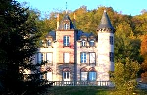
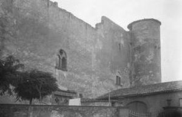
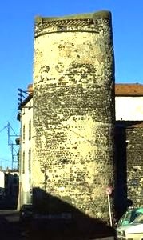
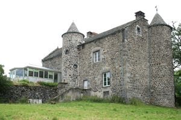

Recensement Jean-Claude Truffet
| Département | 63 — Puy-de-Dôme |
| Canton | Vertaizon |
| Commune | Mezel |
| Type d'édifice | Château |
| Période d'origine | XIII |




MEZEL, au début du XIIIe siècle prise de Mezel par lévêque Robert dAuvergne avec laide de Guy II comte dAuvergne; la famille de Mezel, se distingue alors avec Etienne de Mezel, évêque de Famagouste vers 1230, Imbert de Mezel à la croisade en 1250. Le château a connu plusieurs propriétaires depuis sa construction de 1330 à 1429 Louis de Mezel, ensuite ses descendants, Robert de Mezel en 1378, Guyot de Mezel, Antoine de Mezel qui y réside jusquen 1427, passe à la famille de Murol, en juillet 1558, Marie de Murol apporte le château par mariage à Jacques de Montmorin famille de Montmorin de la Barge. Louis de la Barge devient seigneur de Saint-Bonnet en 1595. Jean-Baptiste Barge vend le château, en 1652 à François Chardon, conseiller à la cour daide de Clermont-Ferrand, en 1785 à la famille Chardon-Guérin acquiet le château. Le conseiller lègue à son second fils, celui-ci le vend quelques temps après à sur qui est mariée à François Guérin, seigneur de Saint-Bonnet. En 1783, on trouve au château Marie Forget veuve dAlexis Guérin qui fut la dernière « Dame de Saint Bonnet », en 1885 à la famille Chaudesaigues de Tarrieux, Il passe par héritage à Anne Chazelade puis la propriété revient à son fils Marie-Jean-Casimir, puis à Marie-Jean-Guy qui le vend à madame Marie Imbert en 1885 , sa descendance le vend en 1953 à M. Francisque Dubois, frère de madame Sauvadet. en 1995 la famille Dubois mais occupé par la famille Sauvadet. Ils ont remis la propriété en exploitation de 1995 à nos jours par la famille Poil Pau.
Château de Mezel construit au XIIIe siècle, est constitué dune enceinte quadrangulaire cantonnée avec au moins trois tours, lenceinte primitive présente encore une façade sud qui a perdu sa bretèche dont subsistent les corbeaux et la moitié de la porte dentrée, elle a conservé la quasi-totalité de ses créneaux et embrasure, lentrée se faisant au sud par une grande porte en ogive défendue par une bretèche, des corps de logis sadossant aux murs nord sud et ouest de l'enceinte. Le corps de bâtiment restera tel quel jusquau XVIIe siècle. Il est réaménagé avec un grand portail au rez-de-chaussée et des fenêtres rectangulaires sur cour. Enfin au XVIIIe siècle réalisation de la grande salle voûtée du rez de chaussée, et lexécution des fenêtres latérales sur cour. Lescalier desservant le premier étage est bâti consécutivement à la disparition de laile Sud. De lautre côté de la cour, le logis Est, était probablement en mauvais état avant sa reconstruction au XVe siècle avec la mise en place de baies moulurées à traverses et croisées de meneaux. Plus tard, au début du XVIIe siècle, un escalier central est inséré au milieu du logis éclairé par des fenêtres à meneaux en arkose. Puis, vers la fin du XVIIIe siècle, lensemble des appartements est réaménagé, avec ladjonction de la tour carrée de langle Sud- Est. Il est situé au sommet de la commune. Cest un bâtiment presque carré, avec deux tours rondes. Il a été détruit en parti par Richelieu. Ses murs mesurent plus dun mètre dépaisseur. Les ouvertures sont de style Renaissance.
Famille Etienne de Mezel
"
Vestiges du château et château de Mezel, château de Léobard.